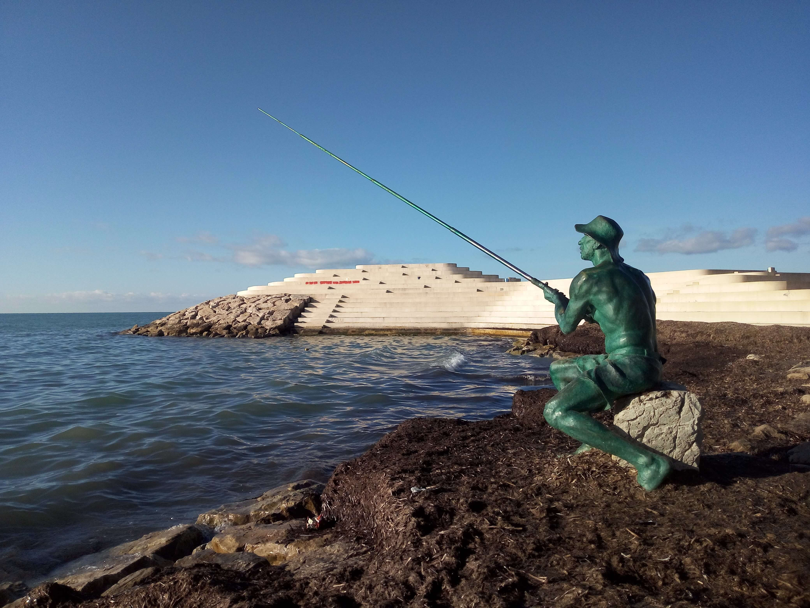

Durrës, Albania
Albania · Adriatic Coast
Durrës is one of Albania's oldest cities, with a history stretching back to the 7th century BC, when it was founded as the ancient Greek settlement of Epidamnus. Later known as Dyrrachium under Roman rule, it became an important port and a strategic gateway between the Adriatic and the Balkans. Its location along the ancient Via Egnatia connected the city to major trade and cultural routes, leaving behind a rich historical legacy shaped by different civilizations.
Today, Durrës brings together its ancient heritage and the relaxed atmosphere of a modern Adriatic coastal city. Archaeological remains, lively streets, sandy beaches, and its waterfront reflect the different layers of its identity. What makes the city particularly interesting is this contrast between its historical importance and everyday seaside life. These photographs capture my personal impressions of Durrës and its distinctive Mediterranean character.
My Photo Gallery
Explore my personal travel photographs capturing the historical landmarks, streets, coastline, and everyday atmosphere of Durrës.
View All Photos ↗